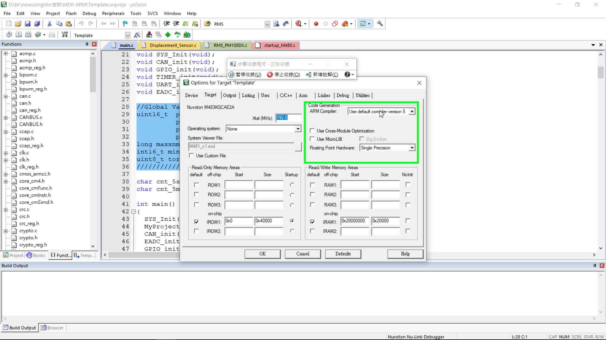
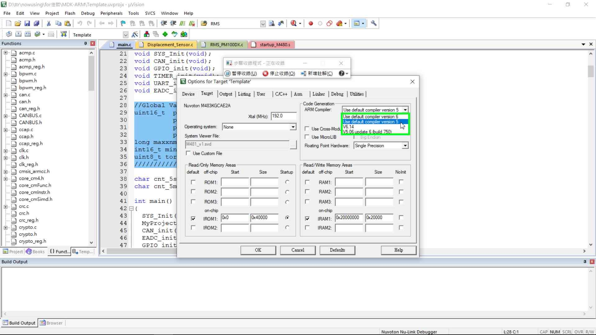
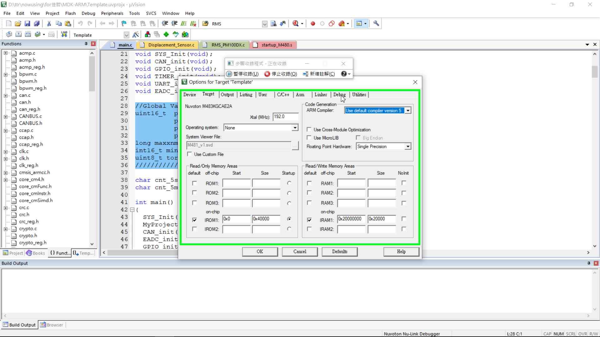
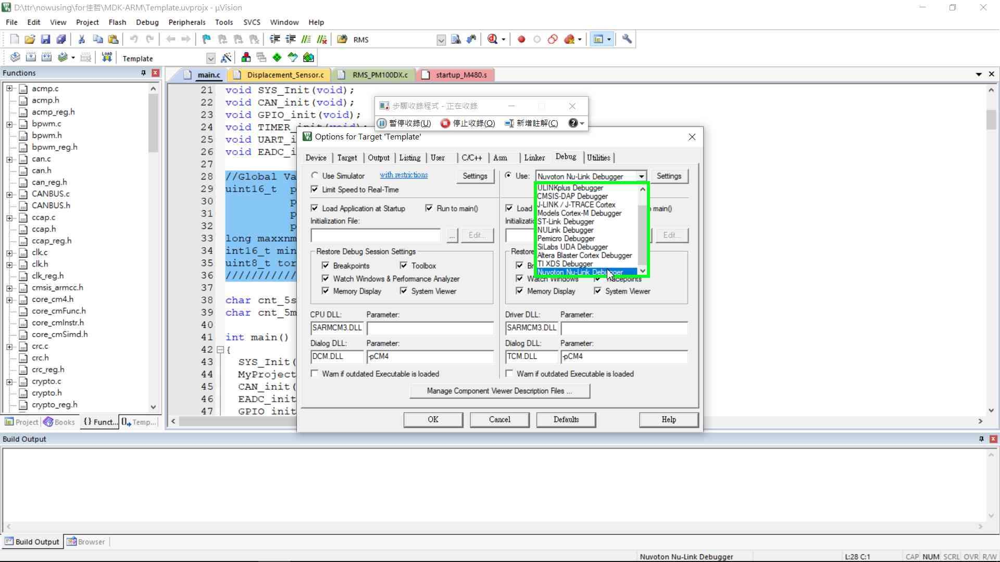
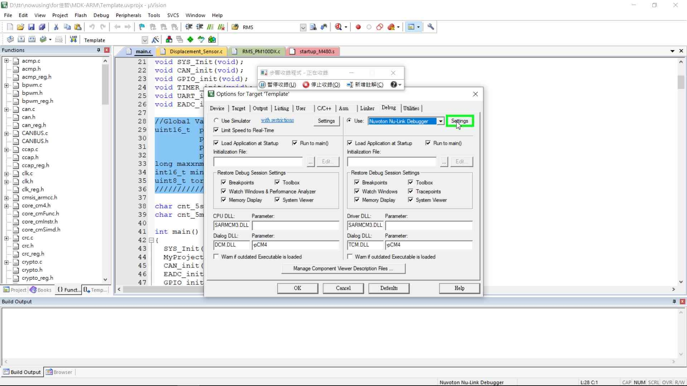
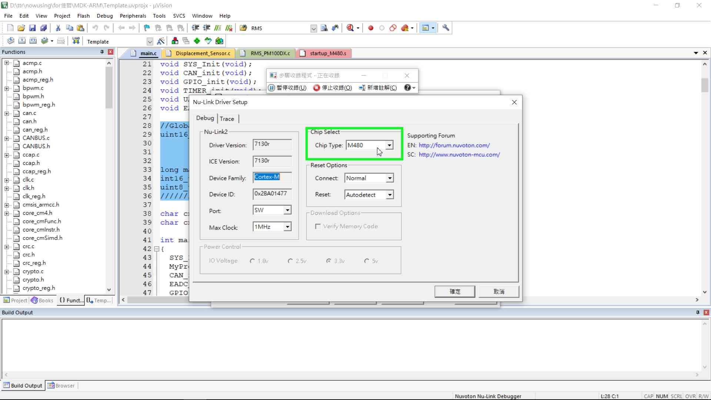
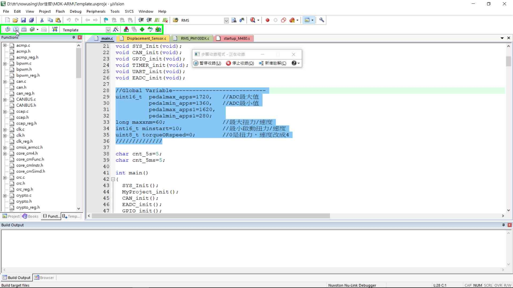
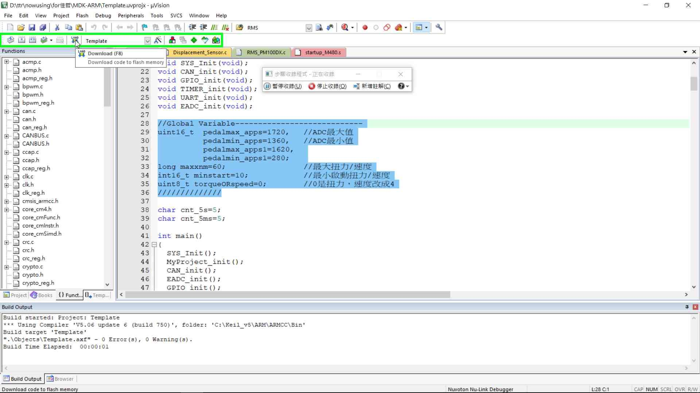

This file contains all the steps and information that was recorded to help you describe the recorded steps to others.
Before sharing this file, you should verify the following:
Passwords or any other text you typed were not recorded, except for function and shortcut keys that you used.
You can do the following:
Step 6: (2021/4/1 下午 11:12:32) 使用者在 "Options for Target... (按鈕)" (於 "D:\" 中) 按一下左鍵
步驟 6 螢幕擷取畫面。
Step 7: (2021/4/1 下午 11:12:35) 使用者在 "ARM Compiler: (下拉式方塊)" (於 "Opt" 中) 按一下左鍵
步驟 7 螢幕擷取畫面。
Step 8: (2021/4/1 下午 11:12:40) 使用者在 "Use default compiler version 5 (清單項目)" 按一下左鍵
步驟 8 螢幕擷取畫面。
Step 9: (2021/4/1 下午 11:12:42) 使用者在 "Debug (索引標籤項目)" (於 "Opt" 中) 按一下左鍵
步驟 9 螢幕擷取畫面。
Step 11: (2021/4/1 下午 11:12:47) 使用者在 "Nuvoton Nu-Link Debugger (清單項目)" 按一下左鍵
步驟 11 螢幕擷取畫面。
Step 12: (2021/4/1 下午 11:12:48) 使用者在 "Settings (按鈕)" (於 "Opt" 中) 按一下左鍵
步驟 12 螢幕擷取畫面。
Step 13: (2021/4/1 下午 11:12:50) 使用者在 "Debug (對話)" (於 "Nu-" 中) 按一下左鍵
步驟 13 螢幕擷取畫面。
Step 17: (2021/4/1 下午 11:13:03) 使用者在 "Build (按鈕)" (於 "D:\" 中) 按一下左鍵
步驟 17 螢幕擷取畫面。
Previous Next
Step 18: (2021/4/1 下午 11:13:08) 使用者在 "Download (按鈕)" (於 "D:\" 中) 按一下左鍵
步驟 18 螢幕擷取畫面。
The following section contains the additional details that were recorded.
These details help accurately identify the programs and UI you used in this recording.
This section may contain text that is internal to programs that only very advanced users or programmers may understand.
Please review these details to ensure that they do not contain any information that you would not like others to see.
錄製工作階段:
2021/4/1 下午 11:12:04 - 下午 11:13:21
已收錄的步驟: 18, 遺失的步驟: 0, 其他錯誤: 0
作業系統:
18362.1.amd64fre.19h1_release.190318-1202 10.0.0.0.2.101
步驟 1: 使用者在 "修改日期 (編輯)" (於 "now" 中) 按兩下左鍵
程式: Windows 檔案總管, 10.0.18362.1171 (WinBuild.160101.0800),
Microsoft Corporation, EXPLORER.EXE, EXPLORER.EXE
UI 元素: 修改日期, UIProperty, for佳哲, UIItem, 項目檢視,
UIItemsView, Shell 資料夾檢視,
DUIListView, [資料夾配置] 窗格, Element, 檔案總管窗格, HWNDView,
DUIViewWndClassName, nowusing, ShellTabWindowClass, nowusing, CabinetWClass
步驟 2: 使用者在 "修改日期 (編輯)" (於 "for" 中) 按兩下左鍵
程式: Windows 檔案總管, 10.0.18362.1171 (WinBuild.160101.0800),
Microsoft Corporation, EXPLORER.EXE, EXPLORER.EXE
UI 元素: 修改日期, UIProperty, MDK-ARM, UIItem, 項目檢視, UIItemsView, Shell 資料夾檢視, DUIListView, [資料夾配置] 窗格, Element, 檔案總管窗格, HWNDView, DUIViewWndClassName, for佳哲, ShellTabWindowClass, for佳哲,
CabinetWClass
步驟 3: 使用者在 "修改日期 (編輯)" (於 "MDK" 中) 按兩下左鍵
程式: Windows 檔案總管, 10.0.18362.1171 (WinBuild.160101.0800),
Microsoft Corporation, EXPLORER.EXE, EXPLORER.EXE
UI 元素: 修改日期, UIProperty, Template.uvprojx, UIItem, 項目檢視, UIItemsView, Shell 資料夾檢視, DUIListView, [資料夾配置] 窗格, Element, 檔案總管窗格, HWNDView, DUIViewWndClassName, MDK-ARM,
ShellTabWindowClass, MDK-ARM, CabinetWClass
步驟 4: 使用者滑鼠拖曳開始於 "D:\"
程式: µVision IDE,
5.30.0.0, ARM Limited, UV4.EXE D:\TTR\NOWUSING\FOR佳哲\MDK-ARM\TEMPLATE.UVPROJX, UV4.EXE
UI 元素:
步驟 5: 使用者滑鼠拖曳結束於 "D:\"
程式: µVision IDE,
5.30.0.0, ARM Limited, UV4.EXE D:\TTR\NOWUSING\FOR佳哲\MDK-ARM\TEMPLATE.UVPROJX, UV4.EXE
UI 元素:
步驟 6: 使用者在 "Options for Target... (按鈕)" (於
"D:\" 中) 按一下左鍵
程式: µVision IDE,
5.30.0.0, ARM Limited, UV4.EXE D:\TTR\NOWUSING\FOR佳哲\MDK-ARM\TEMPLATE.UVPROJX, UV4.EXE
UI 元素: Options for
Target..., Build, Afx:ToolBar:c70000:8:10003:10, Afx:DockPane:c70000:8:10003:10,
D:\ttr\nowusing\for佳哲\MDK-ARM\Template.uvprojx
- μVision, Afx:00C70000:8:00010003:00000000:011411AD
步驟 7: 使用者在 "ARM Compiler: (下拉式方塊)" (於 "Opt" 中) 按一下左鍵
程式: µVision IDE,
5.30.0.0, ARM Limited, UV4.EXE D:\TTR\NOWUSING\FOR佳哲\MDK-ARM\TEMPLATE.UVPROJX, UV4.EXE
UI 元素: ARM Compiler:,
ComboBox, Target, #32770, Options for Target 'Template', #32770,
D:\ttr\nowusing\for佳哲\MDK-ARM\Template.uvprojx
- μVision, Afx:00C70000:8:00010003:00000000:011411AD
步驟 8: 使用者在 "Use default compiler version 5 (清單項目)" 按一下左鍵
程式: µVision IDE,
5.30.0.0, ARM Limited, UV4.EXE D:\TTR\NOWUSING\FOR佳哲\MDK-ARM\TEMPLATE.UVPROJX, UV4.EXE
UI 元素: Use default compiler
version 5, ARM Compiler:, ComboLBox
步驟 9: 使用者在 "Debug (索引標籤項目)" (於 "Opt" 中) 按一下左鍵
程式: µVision IDE, 5.30.0.0,
ARM Limited, UV4.EXE D:\TTR\NOWUSING\FOR佳哲\MDK-ARM\TEMPLATE.UVPROJX,
UV4.EXE
UI 元素: Debug,
SysTabControl32, Options for Target 'Template', #32770, D:\ttr\nowusing\for佳哲\MDK-ARM\Template.uvprojx - μVision,
Afx:00C70000:8:00010003:00000000:011411AD
步驟 10: 使用者在 "開啟 (按鈕)" (於 "Opt" 中) 按一下左鍵
程式: µVision IDE,
5.30.0.0, ARM Limited, UV4.EXE D:\TTR\NOWUSING\FOR佳哲\MDK-ARM\TEMPLATE.UVPROJX, UV4.EXE
UI 元素: 開啟, ComboBox, Debug, #32770, Options for Target 'Template',
#32770, D:\ttr\nowusing\for佳哲\MDK-ARM\Template.uvprojx
- μVision, Afx:00C70000:8:00010003:00000000:011411AD
步驟 11: 使用者在 "Nuvoton Nu-Link Debugger (清單項目)" 按一下左鍵
程式: µVision IDE,
5.30.0.0, ARM Limited, UV4.EXE D:\TTR\NOWUSING\FOR佳哲\MDK-ARM\TEMPLATE.UVPROJX, UV4.EXE
UI 元素: Nuvoton Nu-Link
Debugger, ComboLBox
步驟 12: 使用者在 "Settings (按鈕)" (於
"Opt" 中) 按一下左鍵
程式: µVision IDE,
5.30.0.0, ARM Limited, UV4.EXE D:\TTR\NOWUSING\FOR佳哲\MDK-ARM\TEMPLATE.UVPROJX, UV4.EXE
UI 元素: Settings, Button,
Debug, #32770, Options for Target 'Template', #32770, D:\ttr\nowusing\for佳哲\MDK-ARM\Template.uvprojx - μVision,
Afx:00C70000:8:00010003:00000000:011411AD
步驟 13: 使用者在 "Debug (對話)" (於
"Nu-" 中) 按一下左鍵
程式: µVision IDE,
5.30.0.0, ARM Limited, UV4.EXE D:\TTR\NOWUSING\FOR佳哲\MDK-ARM\TEMPLATE.UVPROJX, UV4.EXE
UI 元素: ComboBox, Debug, #32770,
Nu-Link Driver Setup, #32770, Options for Target 'Template', #32770,
D:\ttr\nowusing\for佳哲\MDK-ARM\Template.uvprojx
- μVision, Afx:00C70000:8:00010003:00000000:011411AD
步驟 14: 使用者在 "M480 (清單項目)" 按一下左鍵
程式: µVision IDE,
5.30.0.0, ARM Limited, UV4.EXE D:\TTR\NOWUSING\FOR佳哲\MDK-ARM\TEMPLATE.UVPROJX, UV4.EXE
UI 元素: M480, ComboLBox
步驟 15: 使用者在 "確定 (按鈕)" (於 "Nu-" 中) 按一下左鍵
程式: µVision IDE,
5.30.0.0, ARM Limited, UV4.EXE D:\TTR\NOWUSING\FOR佳哲\MDK-ARM\TEMPLATE.UVPROJX, UV4.EXE
UI 元素: 確定, Button, Nu-Link Driver Setup, #32770, Options for Target
'Template', #32770, D:\ttr\nowusing\for佳哲\MDK-ARM\Template.uvprojx
- μVision, Afx:00C70000:8:00010003:00000000:011411AD
步驟 16: 使用者在 "OK (按鈕)" (於
"Opt" 中) 按一下左鍵
程式: µVision IDE,
5.30.0.0, ARM Limited, UV4.EXE D:\TTR\NOWUSING\FOR佳哲\MDK-ARM\TEMPLATE.UVPROJX, UV4.EXE
UI 元素: OK, Button, Options
for Target 'Template', #32770, D:\ttr\nowusing\for佳哲\MDK-ARM\Template.uvprojx - μVision,
Afx:00C70000:8:00010003:00000000:011411AD
步驟 17: 使用者在 "Build (按鈕)" (於
"D:\" 中) 按一下左鍵
程式: µVision IDE,
5.30.0.0, ARM Limited, UV4.EXE D:\TTR\NOWUSING\FOR佳哲\MDK-ARM\TEMPLATE.UVPROJX, UV4.EXE
UI 元素: Build, Build,
Afx:ToolBar:c70000:8:10003:10, Afx:DockPane:c70000:8:10003:10,
D:\ttr\nowusing\for佳哲\MDK-ARM\Template.uvprojx
- μVision, Afx:00C70000:8:00010003:00000000:011411AD
步驟 18: 使用者在 "Download (按鈕)" (於
"D:\" 中) 按一下左鍵
程式: µVision IDE,
5.30.0.0, ARM Limited, UV4.EXE D:\TTR\NOWUSING\FOR佳哲\MDK-ARM\TEMPLATE.UVPROJX, UV4.EXE
UI 元素: Download, Build,
Afx:ToolBar:c70000:8:10003:10, Afx:DockPane:c70000:8:10003:10,
D:\ttr\nowusing\for佳哲\MDK-ARM\Template.uvprojx
- μVision, Afx:00C70000:8:00010003:00000000:011411AD